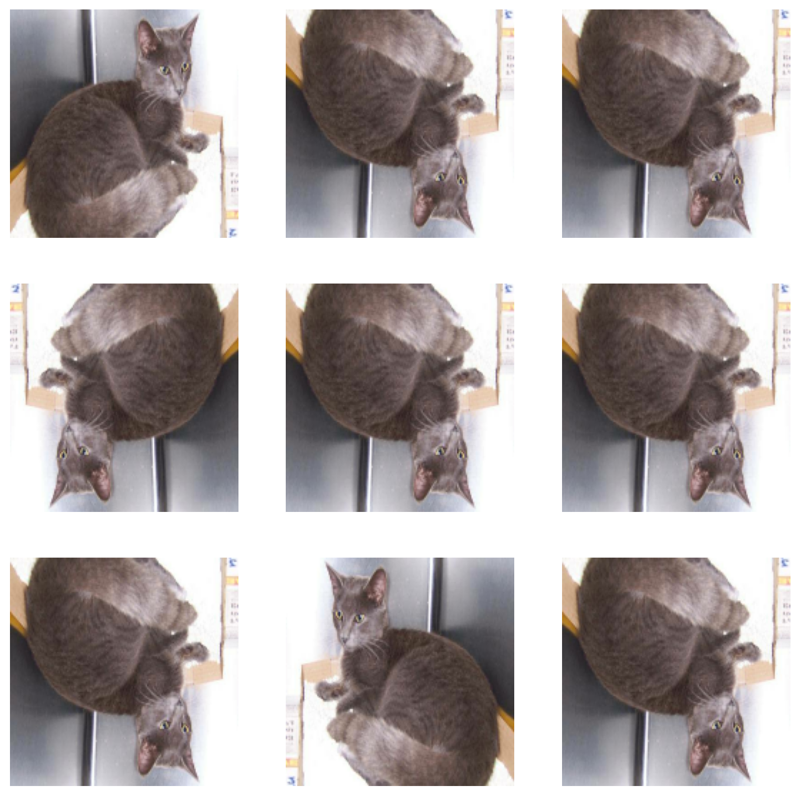

import os
from tensorflow.keras import utils, layers
import tensorflow as tf
from matplotlib import pyplot as plt
import numpy as np
import random
tf.get_logger().setLevel('ERROR')
For this blog post, we will be looking into image classification of pets using Python’s Tensorflow package to create a convolutional neural network (CNN). In this post, you will learn:
- How to obtain image data
- How to create a basic CNN
- How to augment your data
- How to preprocess your data
- How to perform transfer learning
- How to evaluate your model
We will be working with an image dataset that works with images of cats and dogs. The CNN will take these input images and train on these images to get a model that would predict and classify any new images of cats or dogs.
Getting Image Data
The first thing we need to do is to have data to work with. Please run the following code in order to load the necessary libraries for this tutorial, as well as the necessary image files to work on.
# location of data
_URL = 'https://storage.googleapis.com/mledu-datasets/cats_and_dogs_filtered.zip'
# download the data and extract it
path_to_zip = utils.get_file('cats_and_dogs.zip', origin=_URL, extract=True)
# construct paths
PATH = os.path.join(os.path.dirname(path_to_zip), 'cats_and_dogs_filtered')
train_dir = os.path.join(PATH, 'train')
validation_dir = os.path.join(PATH, 'validation')
# parameters for datasets
BATCH_SIZE = 32
IMG_SIZE = (160, 160)
# construct train and validation datasets
train_dataset = utils.image_dataset_from_directory(train_dir,
shuffle=True,
batch_size=BATCH_SIZE,
image_size=IMG_SIZE)
class_names = train_dataset.class_names
validation_dataset = utils.image_dataset_from_directory(validation_dir,
shuffle=True,
batch_size=BATCH_SIZE,
image_size=IMG_SIZE)
# construct the test dataset by taking every 5th observation out of the validation dataset
val_batches = tf.data.experimental.cardinality(validation_dataset)
test_dataset = validation_dataset.take(val_batches // 5)
validation_dataset = validation_dataset.skip(val_batches // 5)Found 2000 files belonging to 2 classes.
Found 1000 files belonging to 2 classes.This following chunk of code will configure the dataset for performance. Specifically the prefetch() function will overlap data preprocessing and model execution while training. If you would like to learn more about how this works, please check out this article.
AUTOTUNE = tf.data.AUTOTUNE
train_dataset = train_dataset.prefetch(buffer_size=AUTOTUNE)
validation_dataset = validation_dataset.prefetch(buffer_size=AUTOTUNE)
test_dataset = test_dataset.prefetch(buffer_size=AUTOTUNE)Now that we have our data loaded, let’s look at some of the images in this dataset.
def catdog(df):
plt.figure(figsize=(10, 10))
# for images in a batch
for images, labels in df.take(1):
# get 3 random labels of cats and dogs
cat_lbls = random.sample(set(np.where(labels == 0)[0]), 3)
dog_lbls = random.sample(set(np.where(labels == 1)[0]), 3)
lbls = cat_lbls + dog_lbls # merge lists
# display images row-wise
for idx, lbl_num in enumerate(lbls):
ax = plt.subplot(2, 3, idx + 1)
plt.imshow(images[lbl_num].numpy().astype("uint8"))
plt.title(class_names[labels[lbl_num]])
plt.axis("off")catdog(train_dataset)From this output, we can see a sample of some of the images of the pets. These come with a variety of breeds, in different positions, and could contain multiple of one pet. This gives us a good sense of the data we are working with.
Now, lets look at the benchmark accuracy for the training dataset.
labels_iterator= train_dataset.unbatch().map(lambda image, label: label).as_numpy_iterator()length = 0
dogs = 0
for lbl in labels_iterator:
length += 1
if lbl == 1:
dogs += 1
cats = length - dogs
{'dogs': dogs, 'cats': cats} # get the number of dogs and cats{'dogs': 1000, 'cats': 1000}dogs / (dogs + cats)0.5The benchmark accuracy for the model should be 50%.
Model 1
With the benchmark in mind, let us start by making our first model. We will first start off with 3 Convolution layers and MaxPooling layers, adding a dropout layer in hopes to prevent overfitting, and flatten out the nodes and to classify the input as either a cat or a dog. Read more about the different types of layers for a convolutional neural network (CNN) here. We also need to compile() the model, which will determine what metrics and optimizer we use to evaluate the performance of the model on the training and validation data. Based on literature and recommendations, this model will use the Adam optimizer for stochastic gradient descent, and evaluate the performance through binary cross-entropy and accuracy.
model1 = tf.keras.Sequential([
layers.Conv2D(16, (3, 3), activation='relu', input_shape = (160, 160, 3)),
layers.MaxPooling2D(),
layers.Conv2D(32, (3, 3), activation='relu'),
layers.MaxPooling2D(),
layers.Conv2D(64, (3, 3), activation='relu'),
layers.MaxPooling2D(),
layers.Dropout(0.05),
layers.Flatten(),
layers.Dense(32, activation = 'relu'),
layers.Dense(1, activation = 'sigmoid')
])
model1.compile(optimizer = 'adam', loss = tf.keras.losses.BinaryCrossentropy(),
metrics = ['accuracy'])model1.summary()history = model1.fit(train_dataset,
epochs=20,
validation_data=validation_dataset)def acc_eval(history, title, threshold):
'''
creates a plot of accuracy over epoches.
@ input:
- history: the neural network
- title (str): Title of Visualization
@ output:
- plot: plot of accuracy
'''
plt.plot(history.history['accuracy'], label = 'training')
plt.plot(history.history['val_accuracy'], label = 'validation')
plt.legend()
plt.title(title)
plt.xticks(np.arange(0, 21, 2))
plt.xlabel("epoch")
plt.ylabel("accuracy")
plt.axhline(y = threshold, color = 'r', linestyle = 'dashed')
plt.show()acc_eval(history, "Model 1", 0.52)As seen from the output of the model fit and the visualization, we can see that the output stablized between 55% and 60% validation accuracy during training. This is only slightly better than the baseline accuracy of 50%. When evaluating for overfitting, we need to look at the difference between the training accuracy and the validation accuracy. Since the training accuracy has trained to be more than 90% accurate while the validation accuracy stayed below 60%, it is reasonable to say that the model is overfitting to the training data.
Data Augmentation
Now, we are going to make some changes to our model to see if we can solve this problem of overfitting and gain a better generalized model. One of the steps is to manipulate and augment the data to prevent the model from fixating on fixed position.
Flipping the Images
The first way we will augment the images is to flip the image through the tf.keras.layers.RandomFlip() layer. By default, the layer would randomly flip the image horizontally or vertically.
flip = tf.keras.Sequential([
layers.RandomFlip("horizontal_and_vertical")
])plt.figure(figsize=(10, 10))
for images, labels in train_dataset.take(1):
for i in range(9):
if i != 0:
augmented_image = flip(images, training = True)
else:
augmented_image = images
ax = plt.subplot(3, 3, i + 1)
plt.imshow(augmented_image[0].numpy().astype('uint8'))
plt.axis("off")
This shows the original image in the top-left image, and then shows how the RandomFlip() function works. It will either invert the image horizontally, vertically, or both ways.
Rotating the Image
The second way we will transform our image is to rotate it, which is through the tf.keras.layers.RandomRotation() layer. We need to specify a factor of 2*pi so that there is a bound to the rotation.
rotate = tf.keras.Sequential([
layers.RandomRotation(0.2)
])plt.figure(figsize=(10, 10))
for images, labels in train_dataset.take(1):
for i in range(9):
if i != 0:
augmented_image = rotate(images, training = True)
else:
augmented_image = images
ax = plt.subplot(3, 3, i + 1)
plt.imshow(augmented_image[0].numpy().astype('uint8'))
plt.axis("off")With this function, it will randomly rotate the original image (top-left) and fill in any extraneous space with black pixels. You can visibly see that the image will take on different angles as it is called mutiple times.
Now, with these two functions in mind, we can create a model that incorporates this data augmentation.
Model 2
This is the second model. It will contain the same architecture as that of Model 1 and add on the functions that we have just created.
model2 = tf.keras.Sequential([
flip,
rotate,
layers.Conv2D(16, (3, 3), activation='relu', input_shape = (160, 160, 3)),
layers.MaxPooling2D(),
layers.Conv2D(32, (3, 3), activation='relu'),
layers.MaxPooling2D(),
layers.Conv2D(64, (3, 3), activation='relu'),
layers.MaxPooling2D(),
layers.Dropout(0.01),
layers.Flatten(),
layers.Dense(32, activation = 'relu'),
layers.Dense(1, activation = 'sigmoid')
])
model2.compile(optimizer = 'adam', loss = tf.keras.losses.BinaryCrossentropy(),
metrics = ['accuracy'])history = model2.fit(train_dataset,
epochs=20,
validation_data=validation_dataset)model2.summary()acc_eval(history, "Model 2", 0.55)We can see that the validation accuracy consistently falls between 56% and 62%. This is a slight improvement compared to the first model. In this case, we still see slight overfitting, in that the training accuracy is still somewhat higher than the validation accuracy, although the difference is not as drastic compared to the first model. The training accuracy improved much slower in this model compared to the first model. Let’s see how we can further improve this model
Data Preprocessing
One of the ways is through data preprocessing, where you transform the data to become normalized. The data currently has RGB values that range between 0 and 255, but we can normalize this to be between 0 and 1 or -1 and 1. In order to do this, we need to create a preprocessing layer called preprocessor which we can add to our model pipeline.
i = tf.keras.Input(shape=(160, 160, 3))
x = tf.keras.applications.mobilenet_v2.preprocess_input(i)
preprocessor = tf.keras.Model(inputs = [i], outputs = [x])With this code, we can now add the preprocessor layer to the beginning of our model pipeline, even before our data augmentation.
Model 3
model3 = tf.keras.Sequential([
preprocessor,
flip,
rotate,
layers.Conv2D(16, (3, 3), activation='relu', input_shape = (160, 160, 3)),
layers.MaxPooling2D(),
layers.Conv2D(32, (3, 3), activation='relu'),
layers.MaxPooling2D(),
layers.Dropout(0.2),
layers.Conv2D(64, (3, 3), activation='relu'),
layers.MaxPooling2D(),
layers.Dropout(0.3),
layers.Flatten(),
layers.Dense(32, activation = 'relu'),
layers.Dense(1, activation = 'sigmoid')
])
model3.compile(optimizer = tf.keras.optimizers.Adam(learning_rate=0.0006), loss = tf.keras.losses.BinaryCrossentropy(),
metrics = ['accuracy'])history = model3.fit(train_dataset,
epochs=20,
validation_data=validation_dataset)model3.summary()acc_eval(history, "Model 3", 0.70)From this model, we can see that the preprocessing has helped a lot. The validation accuracy fluctuates from 70% to 73% as the model trains through more epochs. This performs well compared to the baseline accuracy of 50%, as well as the accuracy of 52% for the first model. In order to prevent overfitting, we increased the percentage of observations to drop out in the dropout() layer. In this case, overfitting is not an issue in comparison to the first two models, as the difference between the training and validation accuracy is not as drastic.
Transfer Learning
From the beginning of the blog post, we have created our own neural network architecture. However, there may be cases where people have built pre-existing models that may have benefits for the task at hand. Let us first instantiate the pre-existing base model.
IMG_SHAPE = IMG_SIZE + (3,)
base_model = tf.keras.applications.MobileNetV2(input_shape=IMG_SHAPE,
include_top=False,
weights='imagenet')
base_model.trainable = False
i = tf.keras.Input(shape=IMG_SHAPE)
x = base_model(i, training = False)
base_model_layer = tf.keras.Model(inputs = [i], outputs = [x])With the base_model_layer, we can create a model that utilizes this layer to create a model with this underlying framework.
Model 4
model4 = tf.keras.Sequential([
preprocessor,
flip,
rotate,
base_model_layer,
layers.GlobalMaxPooling2D(),
layers.Dropout(0.2),
layers.Dense(1, activation = 'sigmoid')
])
model4.compile(optimizer = tf.keras.optimizers.Adam(learning_rate=0.0006), loss = tf.keras.losses.BinaryCrossentropy(),
metrics = ['accuracy'])model4.summary()history = model4.fit(train_dataset,
epochs=20,
validation_data=validation_dataset)acc_eval(history, "Model 4", 0.95)With this model, we can see that the validation accuracy reaches above the desired threshold of 95% after the second epoch. This validation accuracy is substantially higher than the first three models that we made. This is also the first where the validation accuracy exceeds that of the corresponding training accuracy. In this case, there is no overfitting, as the training accuracy does not differ from the validation accuracy greatly.
Score on Test Data
Now, we have to retrieve the classification of the images in the test dataset. This will inform us of our model’s performance on unseen data to see if it truly is a generalizable model.
test_loss, test_acc = model4.evaluate(test_dataset)We can see that our testing accuracy is 95.83%, which is consistent with the findings from the validation accuracy for model 4.
Conclusion
With this post, we have learned how to create a neural network, and to add different types of layers to better the performance! It’s crazy to see how accurate some of these models can get. It makes some of the coding scenes in movies seem just a little more realistic. Play around with these layers for yourself and try to get it to be as accurate as possible.